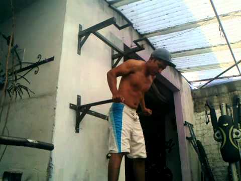

Descubre que tipos de dominadas existen - Ejercicios En Casa
Volver
Rutinas Abdominales Desafíos Dietas Asesoramiento online Rutinas Abdominales Desafíos Dietas Asesoramiento online 4 septiembre, 2019 Consejos , Curiosidades , Rutinas y ejercicios para espaldaDescubre que tipos de dominadas existen
Descubre que tipos de dominadas existen 5 (100%) 2 votesLas dominadas , son uno de los ejercicios más conocidos de todos. Su fama se debe a que no necesita un material ni difícil, ni caro de conseguir (pues únicamente necesitaremos una barra de dominadas para realizarlas) y además es tremendamente efectivo. Existe una variedad enorme de tipos de dominadas para realizar, cada una de ellas se encargan de trabajar de forma diferente nuestro organismo.
Además, las dominadas son un ejercicio que podemos realizar sin salir de casa si contamos con una buena barra. Si todavía no tienes barra, puedes conseguir la tuya en barradominadas.com .
Contenidos
1 13 Tipos de dominadas 1.1 Tipos de dominadas – Dominadas con dos dedos 1.2 Tipos de dominadas – Dominadas supinas 1.3 Tipos de dominadas – Dominadas al pecho 1.4 Tipos de dominadas Dominadas con kipping 1.5 Tipos de dominadas – Dominadas abiertas 1.6 Tipos de dominadas – Dominadas parciales 1.7 Tipos de dominadas – Dominadas estrictas 1.8 Tipos de dominadas – Dominadas isométricas 1.9 Tipos de dominadas – Dominadas asistidas 1.10 Tipos de dominadas – Dominadas de bombero 1.11 Tipos de dominadas – Dominadas a una mano 1.12 Tipos de dominadas – Dominadas excéntricas 1.13 Tipos de dominadas – Dominadas lastradas13 Tipos de dominadas
Por norma general, se asocian las dominadas a un ejercicio para espalda y si bien, la verdad es que la mayoría de los diferentes tipos de dominadas trabajan la espalda por encima de otros músculos, la realidad es que existe movimientos de dominadas que no siguen esta misma lógica.
Sea el músculo primario que trabajen, lo que es una realidad es que los diferentes tipos de dominadas nos darán una gran fuerza, resistencia muscular, agilidad. E incluso algunos tipos de dominadas , son darán resistencia cardiovascular . No hay excusa para probar estos excelentes ejercicios de fuerza corporal.
Tipos de dominadas – Dominadas con dos dedos
Una de las dominadas más difíciles de realizar. Exige de una gran fuerza en las muñecas para conseguir sostener todo nuestro peso corporal únicamente con dos dedos por mano. Como si de un garfio se tratase, nos agarraremos a la barra de dominadas con agarre pronador. Pero sólo utilizando dos dedos, como indicamos anteriormente. Por lo demás, es exactamente igual que las dominadas convencionales.
Tipos de dominadas – Dominadas supinas
Las dominadas supinas o chin up , como bien sabéis, son aquellas que involucran más a los bíceps en la ejecución del movimiento. Al igual que las dominadas pronadoras, las supinas se pueden realizar estrictas, con kipping e incluso elevándonos hacia el pecho.
Os dejo un vídeo sobre cómo deberemos de realizar este tipo de dominada:
Tipos de dominadas – Dominadas al pecho
Son una versión de las dominadas con kipping en versión algo más compleja, pues para realizarla adecuadamente, tendremos que tocar con nuestro pecho en la barra de dominadas .
Para esto, necesitaremos impulsarnos potentemente con nuestros brazos y caderas para conseguir elevar a nuestro cuerpo hasta conseguir tocar el pecho. No es un ejercicio nada fácil de realizar, no recomendada para neonatos en la materia.
Tipos de dominadas Dominadas con kipping
Las dominadas con kipping , son aquellas que se realizan con la ayuda del impulso de nuestro cuerpo para realizarlas. Más que tratar de conseguir aumentar masa muscular , se busca optimizar la funcionalidad corporal. Teniendo como objetivo sacar más número de dominadas que ensanchar los músculos de la espalda.
Tipos de dominadas – Dominadas abiertas
Las dominadas abiertas son exactamente iguales que las dominadas convencionales, simplemente cambiando la posición de las manos. Se abren más las manos con el fin de trabajar más los músculos dorsales y se pueden realizar, con agarre supino y agarre pronador.
Tipos de dominadas – Dominadas parciales
Las dominadas parciales son una versión utilizada por las personas que no tienen la pericia suficiente para conseguir sacar dominadas completas.
Son excelentes, pues aparte de ayudarnos a trabajar los músculos que participan en las dominadas. Adicionalmente nos sirve para adquirir la dinámica correcta de movimiento. Haciendo que el esfuerzo sea mucho menor cuando intentemos volver a realizar las dominadas comunes.
Para ejecutarlas, el rango de movimiento será graduable, pudiendo marcarnos un límite en la subida o realzándolas hasta lo máximo que podamos. Lo marcaremos en función de nuestras necesidades específicas. Por ejemplo, alguien que nunca haya hecho ejercicio y tenga un peso corporal elevado, el rango de movimiento será pequeño. Sin embargo, otra persona que se quiera centrar en trabajar el punto de estancamiento, el recorrido será previsiblemente mayor.
Tipos de dominadas – Dominadas estrictas
Son el tipo más básico de dominadas. Son aquellas que se nos vienen a la cabeza cuando nos preguntan por lo que es una dominada se nos viene automáticamente a la cabeza. Deberemos tener en cuenta, que no podremos mover ni un ápice nuestra cadera ni las piernas. Pues únicamente los brazos podrán moverse durante su ejecución.
A modo de recordatorio, deberemos partir el movimiento desde la zona inicial. Lo haremos con los brazos completamente extendidos y no finalizaremos de elevarnos hasta que consigamos pasar la perilla por encima de la barra de dominadas .
Para aquellas personas que quieran dominar la técnica, os dejo a continuación un tutorial:
Tipos de dominadas – Dominadas isométricas
Las dominadas isométricas son aquellas en las que deberemos aguantar el máximo tiempo posible en una determinada posición del movimiento. Podemos elegir el grado donde realizar las dominadas para ganar fuerza en la zona escogida. Esto nos permite variar constantemente el ejercicio, añadiendo o quitando dificultad.
Es una dominada recomendada para principiantes. Ya que, el nivel de fuerza física que necesitaremos tener para conseguir realizarla es mucho menor. Perfecta para conseguir realizar dominadas completas.
Tipos de dominadas – Dominadas asistidas
Al igual que las dominadas parciales o incluso con las dominadas con kipping , las dominadas asistidas son aquellas que se realizan cuando no somos capaces de realizar dominadas estrictas. Para ello, utilizamos una máquina asistida que nos ayuda a elevar nuestro cuerpo en función del peso que metemos en la misma.
Nos permite graduar la dificultad, pudiendo usarla desde una persona que sea capaz de poder realizar dominadas hasta alguien que pese 150kg y que en su vida haya realizado deporte.
Tipos de dominadas – Dominadas de bombero
Dominadas de bombero o muscle up en barra , son aquellas que combinan una dominada al pecho con un fondo de tríceps en barra. Es uno de los ejercicios de fuerza corporal más complicado que existen, pues para su correcta ejecución necesitamos una combinación de fuerza, potencia y coordinación para realizarla perfectamente.
Más que necesitar una gran fuerza , es más imporante tener controlado el kipping para que nos ayude a levantarnos mucho más fácilmente. La diferencia de peso puede ser más definitoria que en otros tipos de dominadas. Pues pesar 10 kilos más o menos nos condicionará mucho a la hora de realizar las dominadas de bombero.
Tipos de dominadas – Dominadas a una mano
Para conseguir realizar una dominada a una mano , requeriremos de una extraordinaria fuerza . Aunque puede competir en dificultad con las dominadas de bombero, aquí no es tan necesario tener una técnica depuradísima. Ya que es mucho más importante tener fuerza física para levantarnos.
La fuerza en el agarre será fundamental para conseguir realizar dominadas a una mano . Por lo que es importante fortalecerlo realizando ejercicios específicos de agarre y fuerza en la muñeca para ayudarnos.
Tipos de dominadas – Dominadas excéntricas
Las dominadas excéntricas son una variedad de dominada que nos ayuda a ganar fuerza de forma increíble. Además, será de una forma más sencilla que otros de los tipos de las dominadas expuestos anteriormente. Además, puede ser realizadas también por aquellas personas que aún todavía no son capaces de sacar dominadas estrictas.
Lo único que deberemos hacer para ejecutar dominadas excéntricas , es comenzar el ejercicio desde la posición “final” habitual de las dominadas estrictas. Es decir, con la barbilla por encima de la barra de dominadas. Comenzaremos a bajar de forma muy lenta hasta llegar hasta la posición final que será una vez tengmaos extendidos los brazos por completo. Intentaremos aguantar más de 5 segundos en la bajada, sin dejarnos caer de golpe en momento alguno. Ya que la dificultad del ejercicio radica precisamente en resistir la caída.
Tipos de dominadas – Dominadas lastradas
Las dominadas lastradas , en realidad no son ninguna variante en concreto. Sino que es una forma de realizar casi cualquier tipo de las dominadas mencionadas anteriormente. En especial cualquier variante de dominada estricta , pues con kipping no tiene sentido relizarlas.
Son uno de los tipos de dominadas que consisten en emplear carga externa para incrementar la dificultad del ejercicio. Es decir, emplearemos un cinto u objeto similar para colocar peso e incrementar la intensidad de la dominada. Sin duda, es uno de los mejores tipos de dominadas para ganar fuerza y masa muscular.
Summary Article Name Descubre que tipos de dominadas existen Author Juan Manuel Toledo EjerciciosEnCasaPublicado por Juanma
Amante del deporte de fuerza y del entrenamiento funcional en general
Etiquetas: tipos de dominadas , variedades de dominadas David929y la dominadas pronas? tengo entendido son las que tienen menos estrés en los hombros y bíceps , perfectas para ir progresando a las pronas
Benicio Hispanidaddisculpa, lo de «neonatos en la materia» creo que no está bien expresado un neonato es un recién nacido, ¿no?
Ejercicios en CasaBuenas Benicio!
Era un símil de novato. Es probable, que la acepción no sea válida para tal uso, voy a investigar sobre ello.
Un saludo y muchas gracias Benicio!
Jove IllencHola! Una duda que se me vino a la cabeza: si haces dominadas mientras tienes las piernas en ángulo de 90 grados respecto al tren superior, es un buen ejercicio para hacer a la vez dominadas y abdominales? O interfiere de alguna manera?
jose manuel perez andrades Hola Juanma tengo 17 años y llevo 1 año y pico practicando dominadas, calistenia
No se cual es el nombre tecnico pero yo y mis amigos las llamamos «completas» en fin que ahora he empezado a hacerlas con lastre de 10-15 kg desde hace 3 o 4 semanicas + dieta y la verdad es que ahora estoy empezando a desarrollar bastante el volumen de los brazos estoy muy satisfecho gracias a tus consejos GRACIAS!!!!!